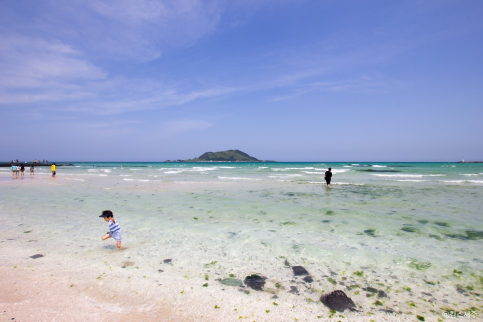
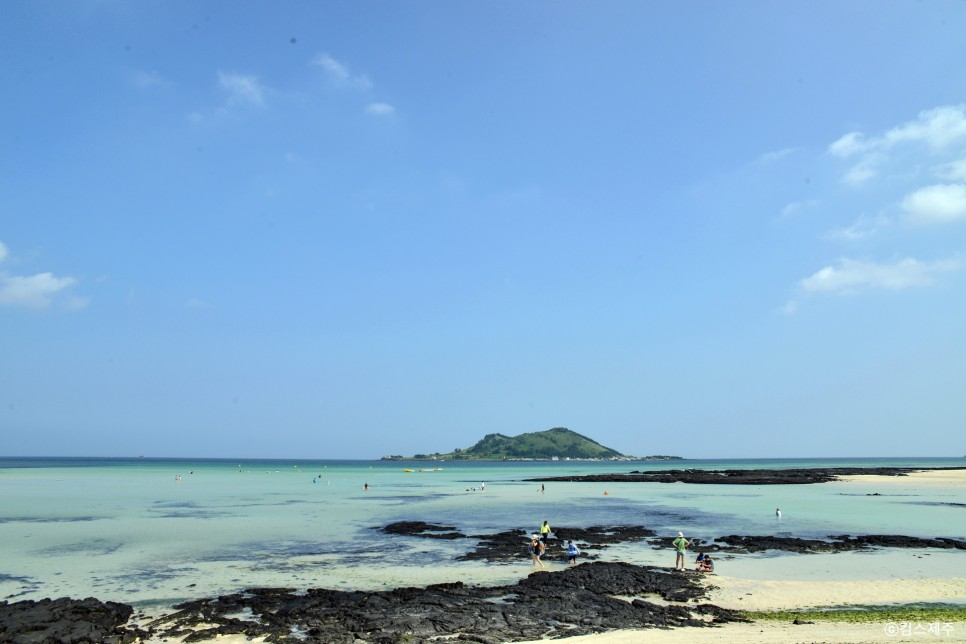
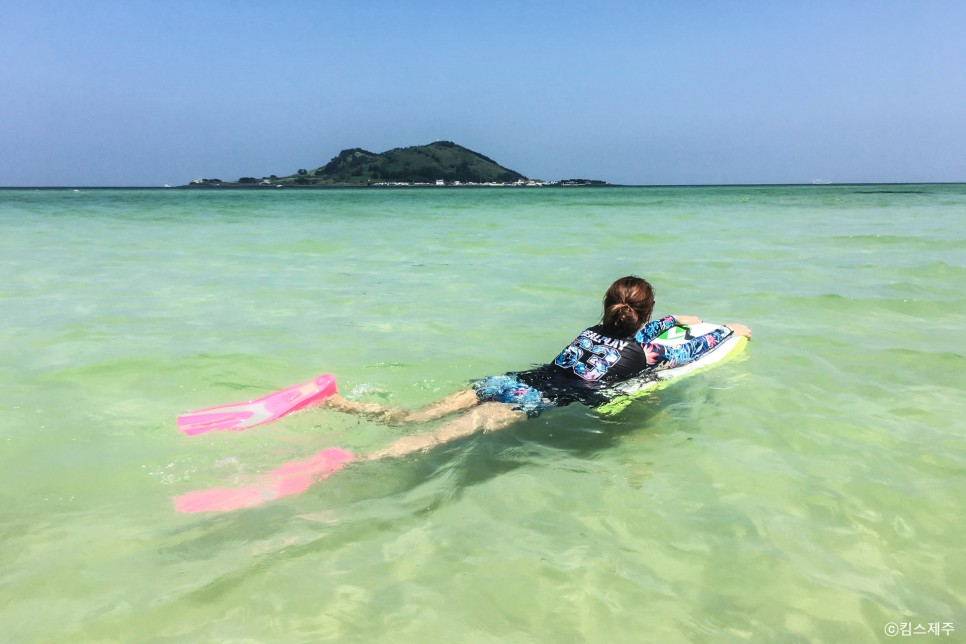

카테고리 : 여행

물 속이 훤히 비치는 투명함과 이국적인 바다 색,
멀리 보이는 비양도로 유명한 협재 해수욕장!

그 옆에는 검은 현무암들이 넓은 초록색 바다와 어우러져 있어
또 다른 아름다움을 보여주는 금능 해수욕장이 있습니다

금능에서 그늘막이나 파라솔 같은 개인적인 비치 시설을 즐기고 싶다면
야자수 근처 해변가로 이동해서 물놀이를 즐기는 게 좋습니다
다만, 깊이를 가늠할 수 없는 위험한 곳이 있으니 안전 장비는 꼭 챙겨가세요!
금능 해수욕장의 위치는 링크를 확인해주세요!